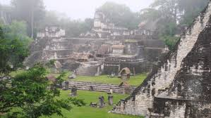
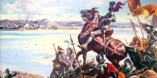

La civilización maya, una de las más avanzadas y sofisticadas de la América precolombina, floreció en la región de Petén, Guatemala, durante más de 2,000 años. Esta vasta selva tropical fue el epicentro de grandes centros urbanos, gobernados por poderosos reyes y sacerdotes, que se destacaron por sus impresionantes logros en arquitectura, astronomía, matemáticas y escritura jeroglífica. Las ciudades de Tikal, Yaxhá y Uaxactún se convirtieron en centros de poder y conocimiento, dejando un legado cultural, científico y espiritual que aún asombra al mundo moderno. A pesar del colapso de sus principales ciudades hacia el siglo IX, los mayas nunca desaparecieron y siguen siendo una parte viva e integral del paisaje cultural de Petén.
La civilización maya en Petén alcanzó su apogeo durante el Período Clásico (250-900 d.C.). Durante este tiempo, Petén albergó algunas de las ciudades más influyentes de Mesoamérica. Tikal, la ciudad más prominente, se extendió sobre más de 16 kilómetros cuadrados y contaba con templos que superaban los 70 metros de altura, como el Templo IV. La rivalidad política y bélica entre Tikal y otras ciudades como Calakmul, al norte en el actual México, impulsó una era de conflicto y crecimiento en toda la región, conocida como la Guerra de las Dos Superpotencias.
Las ciudades mayas de Petén son conocidas por sus majestuosas pirámides y templos escalonados, construidos con precisión asombrosa. Las estructuras más icónicas incluyen la Gran Plaza de Tikal, flanqueada por el Templo del Gran Jaguar y el Templo de las Máscaras, y la Acrópolis Norte, que servía como complejo ceremonial y funerario para la élite. Estas edificaciones no solo eran centros políticos y religiosos, sino también símbolos de poder diseñados para impresionar a sus contemporáneos y a las futuras generaciones.
Los mayas de Petén eran ávidos astrónomos y matemáticos. Desde sus observatorios, registraban con precisión los movimientos de Venus, la Luna y las constelaciones, lo que influía en la planificación de sus guerras y ceremonias. Utilizaban un sistema numérico basado en el 20 y desarrollaron el concepto del cero siglos antes que otras civilizaciones. El calendario maya es uno de sus mayores logros: un sistema intrincado de ciclos que entrelaza el calendario solar de 365 días (Haab) con el calendario ritual de 260 días (Tzolk’in), creando una rueda de tiempo que permitía a los sacerdotes predecir eventos cíclicos y guiar la vida espiritual y política de la sociedad.
La religión maya era central en todos los aspectos de la vida. Los mayas creían que su mundo estaba compuesto por tres planos: el inframundo, el mundo terrenal y el supramundo. Los templos y pirámides de Petén se construían para representar la conexión entre estos mundos, con sus cimas alcanzando los cielos, sirviendo como puntos de contacto con los dioses.
La conquista de Petén, una región rica en cultura y biodiversidad, es un capítulo fundamental en la historia de Guatemala. Durante el período de la conquista española en el siglo XVI, Petén fue un área de gran interés debido a su conexión con la civilización maya y sus vastos recursos naturales. La llegada de los conquistadores marcó el inicio de una serie de eventos que transformaron radicalmente la vida de los pueblos indígenas que habitaban esta región, así como la estructura política y social del área.
La civilización maya en Petén alcanzó su apogeo durante el Período Clásico (250-900 d.C.). Durante este tiempo, Petén albergó algunas de las ciudades más influyentes de Mesoamérica. Tikal, la ciudad más prominente, se extendió sobre más de 16 kilómetros cuadrados y contaba con templos que superaban los 70 metros de altura, como el Templo IV. La rivalidad política y bélica entre Tikal y otras ciudades como Calakmul, al norte en el actual México, impulsó una era de conflicto y crecimiento en toda la región, conocida como la Guerra de las Dos Superpotencias.
En el siglo XVI, bajo el liderazgo de Hernán Cortés, los españoles comenzaron a explorar el territorio maya. Aunque inicialmente su enfoque estuvo en el altiplano y el occidente de Guatemala, el interés por Petén no tardó en surgir. En 1524, Pedro de Alvarado, un conquistador al servicio de Cortés, llegó a las tierras mayas y comenzó a establecer contacto con los pueblos indígenas.A pesar de la resistencia inicial de las comunidades indígenas, los conquistadores, armados con tecnología superior y tácticas de guerra, lograron imponerse. En 1541, después de varios enfrentamientos y alianzas con ciertos grupos mayas, los españoles conquistaron Tikal, uno de los centros más importantes de la civilización maya. Esta conquista marcó el inicio de un periodo de dominación que transformaría radicalmente la cultura y la estructura social de Petén.
A pesar de la resistencia inicial de las comunidades indígenas, los conquistadores, armados con tecnología superior y tácticas de guerra, lograron imponerse. En 1541, después de varios enfrentamientos y alianzas con ciertos grupos mayas, los españoles conquistaron Tikal, uno de los centros más importantes de la civilización maya. Esta conquista marcó el inicio de un periodo de dominación que transformaría radicalmente la cultura y la estructura social de Petén.
La conquista de Petén tuvo profundas consecuencias para los pueblos indígenas. La llegada de los españoles trajo enfermedades como la viruela, que diezmaron a la población local. Además, la imposición de un nuevo orden social, la evangelización forzada y el establecimiento de colonias llevaron a la pérdida de tradiciones y costumbres ancestrales. La explotación de los recursos naturales de Petén por parte de los colonizadores resultó en la degradación ambiental de la región.
